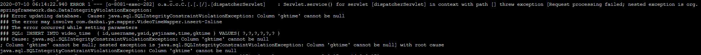

MySQL timestamp NOT NULL插入NULL的问题
- 作者:
- 淡白
- 创建时间：
- 2020-07-10 14:24:17
- MySQL
摘要：问题描述：在MySQL数据库中，遇到了字段`gktime`不能为null的问题。该字段的表结构如下图所示。为了解决这个问题，可以设置字段`gktime`有默认值。 解决方法：在MySQL 5.6版本中，引入了`explicit_defaults_for_timestamp`参数来控制对timestamp NULL值的处理。如果该参数不开启，插入NULL值到timestamp NOT NULL字段时，不会报错，也不会有警告，插入后的值会被设置为当前时间。如果在my.cnf配置文件中设置`explicit_defaults_for_timestamp=1`，则在插入该字段时会报错，提示该列不可以为null。可以通过执行以下命令来设置该参数为0：`set global explicit_defaults_for_timestamp=0;`，或者在`my.cnf`配置文件中添加`explicit_defaults_for_timestamp = 0`来修改该参数的值。
遇到如下问题

字段gktime不能为null
这是表结构：
设置字段gktime有默认值
解决
MySQL 5.6版本引入
explicit_defaults_for_timestamp
来控制对timestamp NULL值的处理
如果该参数不开启，则对timestamp NOT NULL插入NULL值，不报错，无warning，插入后的值为当前时间
如果在my.cnf中explicit_defaults_for_timestamp=1
那么插入该值的时候会报错提示该列can not be null
设置该值
set global explicit_defaults_for_timestamp=0;
或者修改my.cnf
explicit_defaults_for_timestamp = 0